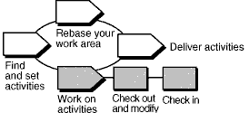

Overview
The following diagram illustrates the UCM workflow. Shaded areas are discussed in this tool mentor.
UCM Workflow

Terminology note: A ClearCase UCM activity maps closely to a RUP Work Order. It is not to be confused with the RUP concept of an activity.
A UCM activity tracks versions that are created when you work on a development task. An activity includes a text
headline that describes the task, the user ID of the activity creator, and a change set that identifies all versions
you create when working on the activity. When you're ready to modify source files, you must set your development
view to an activity.
You must set an activity for your development view before you can modify files.
This tool mentor is applicable when running Microsoft Windows.
Tool Steps
To work with UCM activities:
-
Create, or find, and set an activity
-
Check out and modify versions
-
Check in your work
When you check out files or directories in a UCM project, you are asked to specify an activity to track your work.
Create a new activity and set it in your current view
-
In a Check Out, Check In, or Add to Source Control dialog box, click New.
-
In the New Activity dialog box, enter the headline of an activity.
-
Click OK.
-
To add this activity to your stream and set it in your view, click OK.
Find and set an activity
Activities are maintained between work sessions. Follow these steps to find an existing activity and set it in your
development view.
From ClearCase Explorer:
-
In ClearCase Explorer, click the Views tab.
-
Click the page for your project and then select your development view.
-
In the Folder pane, click My Activities.
-
In the Details pane, select the check box next to the activity you want to set.
From ClearCase dialog boxes:
-
From the Check Out, Check In, or Add to Source Control dialog box, do one of the following:
-
Choose an activity from the Activity list.
-
Click Browse and choose other selection criteria.
-
Click OK. ClearCase sets your view to the activity currently selected in the Activity list.
Before modifying source files, go to your Development view and check them out. Checking out makes file or directory
versions writeable in your view.
-
In ClearCase Explorer, select files or directories, then right-click the selection and click Check
Out.
-
ClearCase opens the Check Out dialog box with the currently set activity selected in the Activity list. You can
accept the selection, choose another activity, or create a new activity.
-
In the Comment box, describe your planned changes. Comments appear in the version's Properties Browser and
in the element's History Browser.
-
Do one of the following:
-
To check out one file only, click OK.
-
To use the current settings in this dialog box for all selected items, click Apply to All.
-
To interrupt the check out process, and to leave this and any remaining items checked in, click Cancel.
When you want to keep a record of a file's current state, check it in. Checking in files or directories adds new
versions to the VOB. Version information is recorded by the currently set activity.
Your view remains set to the current activity after a check-in.
-
In ClearCase Explorer, select checked out files or directories.
-
Right-click the selection and click Check In.
-
In the Comment box, you may overwrite or append to the comment you entered when you checked out the file or
folder.
-
Do one of the following:
-
To check in one file only, click OK.
-
To use the current settings in this dialog box for all selected items, click Apply to All.
-
To interrupt the check in process, and to leave this and any remaining items checked out, click Cancel.
 See the Developing
Software online help for detailed information on each step. See the Developing
Software online help for detailed information on each step.
|